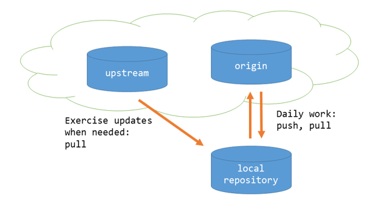

Etärepositoriot
Repositoriouden hajautus
Kuten jo aiemmin todettiin, git tallettaa kaiken informaation paikallisesti omaan tietovarastoonsa, jota kutsutaan repositorioksi. Paikallinen tietovarasto sisältää kaiken tarvittavan tiedon
Itsenäisten repositorioiden välille voidaan määritellä yhteys, jolloin niiden sisältöjä voidaan synkronoida keskenään. Synkronointia voidaan tehdä yhteen suuntaan tai molempiin.
Muut repositoriot, joihin paikallisella repositoriolla on yhteys, ovat etärepositorioita (remote).
Kloonaus
Kun työskennellään projektissa, on jossakin yhteisesti sovittu pää-repositorio, jossa pidetään yllä yhteistä koodia.
Tällöin paikallinen kopio repositoriosta saadaan helposti clone-operaatiolla
- lisää hakemistoon master-haaran uusimmat tiedostot
- konfiguroi alkuperäisen repositorion uuden repositorion etärepositorioksi oletusnimellä
origin
Tästä voi heti jatkaa kehitystä omassa työtilassaan.
Etärepositorion määrittely
Etärepositoriosuhteita voi määrittää myös ilman kloonausta. Tämä on tarpeen esim. silloin, kun haluat tehdä projektin yhteisen repositorion olemassa olevasta paikallisesta repositoriosta.
Voit määritellä etärepositorioita komennolla remote add:
originof etärepositoriolle annettu nimihttps://github.com/user/repository.giton sen osoite.
Koska origin on etärepositorion oletusnimi, sitä käytetään useimmiten. Se on kuitenkin vain nimi, ei varattu sana.
Voit listata etärepositoriot komennolla remote.
–v (--verbose).
Etärepositorioita voi uudelleennimetä komennolla rename ja poistaa komennolla rm.
Tietojen haku etärepositoriosta
Repositorioiden tietojen synkronointi tapahtuu kahdessa vaiheessa:
- Etärepositorien haarassa olevat tiedot haetaan paikalliseen repositorioon paikallisten haarojen rinnalle (fetch).
- Etärepositorion haara yhdistetään sitä vastaavaan paikalliseen haaraan (merge).
Fetch
Komento fetch lataa etärepositorion tiedot paikalliseen repositorioon.
Etärepositorion haarat löytyvät etärepositorion nimen alta, esim. origin/master. etärepositorion haarat voit listata valitsimella –r.
Voit tutkia etärepositoriosta ladattua sisältöä tavallisella checkout-komennolla (ja git log yms.) ja halutessasi yhdistää paikalliseen sisältöön tavallisella merge-komennolla.
Pull
Komento fetch lataa etärepositoriosta saataville kaikki muutokset, joita sinulla ei vielä ole. Jotta saisit ne oman repositoriosi haaraan, ne on yhdistettävä sinne (merge).
Koska tämä kaksivaiheinen operaatio on niin tavallinen, sille on erikseen komento pull, joka hakee nykyisen haaran uudet tiedot etärepositoriosta ja yhdistää ne nykyiseen haaraasi automaattisesti.
Tämä toiminto on siis sama kuin
Koska pull tekee myös yhdistämisen, komennon suorituksessa voi tulla konflikteja. Joskus voi olla selkeämpää tehdä toiminnot erikseen.
Tietojen vienti etärepositorioon (push)
Komento push synkronoi paikallisen repositorion tietoja etärepositorioon.
originon etärepositorion nimi, johon tietoja viedäänmasteron vietävän haaran nimi
Paikallisia haaroja ei automaattisesti viedä etärepositorioon vaan ne pitää eksplisiittisesti viedä sinne. Näin voit jättää osan haaroista täysin paikallisiksi, esim. väliaikaisia haaroja usein ei tarvitse synkronoida.
Kaikki paikalliset haarat viedään, jos käytät valitsinta –all.
Ensimmäisellä kerralla kannattaa käyttää push-komennossa valitsinta –u (--set-upstream). Se asettaa kyseinen etärepositoriohaaran vietävän paikallisen haaran oletusarvoiseksi etärepositoriohaaraksi.
Tällöin etärepositoriota ei tarvitse jatkossa erikseen komennossa ilmoittaa vaan riittää
Etärepositoriot ja haarat
Etärepositorioiden synkronoinnissa on itse asiassa kyse haarojen synkronoinnista.
Kun teet haaroja paikallisesti, ja käytössä on etärepositorio, on päätettävä, haluatko synkronoida sen vai et. Jos haluat, sinun täytyy erikseen se sinne viedä (ellet käytä valitsinta --a). Samalla kannattaa määrittää etähaaralle oletusarvo, niin synkronointi on jatkossa helpompaa.
Komento fetch tuo haaran tiedot paikalliseen repositorioon, mutta ei yhdistä sitä
Tuloksena paikalliseen repositorioon tulee tiedot etärepositorionn muutoksista. Ne talletetaan paikallisiin haaroihin, joiden nimi on muotoa <etärepositorio>/<haara>.
Paikallinen origin/master on siis kopio etärepositorion origin haarasta master. Kun yhdistät tuotuja haaroja, se tapahtuu paikallisen kopion kanssa.
Komento git pull tekee molemmat toimenpiteet kerralla. Se hakee ensin etärepositorion haaran (fetch) ja yhdistää sen paikalliseen haaraan (merge).
Useita etärepositorioita
Useimmiten sisältöjä synkronoidaan vain yhden etärepositorion kanssa, mutta niitä voi olla useampiakin. Tällöin kaikkien synkronoitavien repositorioiden pitää olla samaa kantaa, niillä pitää olla yhteinen lähtökohta, johon versiohistorioita voidaan yhdistää.
Seuraavassa esimerkissä paikalliselle repositoriolle on määritelty kaksi etärepositoriota, origin ja upstream. Tilanne voisi olla seuraava:
- Pilvipalvelussa sijaitsevassa
upstream-repositoriossa on kurssin tehtäviä, joita opiskelijat voivat kloonata omaan repositorioonsa. - Opiskelija tekee tehtävät ja tallettaa vastaukset omaan repositorioonsa.
- Opiskelija perustaa pilvipalveluun oman repositorion palautuksia varten ja jakaa sitä kautta palautukset opettajalle.
Tässä tapauksessa opiskelijalla ei ole kirjoitusoikeutta upstream-repositorioon. Hän voi kuitenkin yhdistää sieltä saatavia mahdollisia tehtäväpäivityksiä omaan repositorioonsa, koska kaikilla repositorioilla on yhteinen alkuperä, upstream-repositorio.
